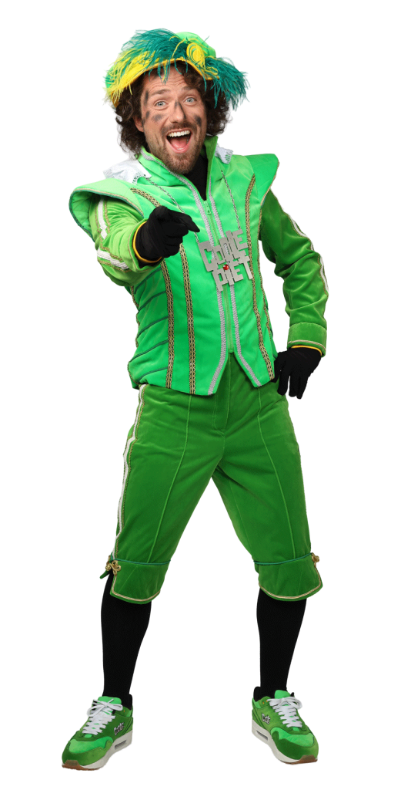

🎁 Het Verhaal
De Club van Sinterklaas is een team van vrolijke Pieten die samen met Sinterklaas elk jaar zorgen voor een geweldig Sinterklaasfeest. Ze beleven grappige, spannende en muzikale avonturen terwijl ze cadeautjes rondbrengen in het hele land!
🧝 De Pieten
Coole Piet
De stoerste Piet van allemaal, altijd met zijn zonnebril!
Testpiet

Test alles: pakjes, chocolade en natuurlijk speelgoed!
Muziekpiet
Zorgt voor de leukste liedjes en feestjes.
🎶 Muziek
Luister hier naar het bekende lied "De Club van Sinterklaas - 1999" :
🔈 Staat je geluid wel aan?
(Klik om te sluiten)
(Klik om te sluiten)
00:00 / 00:00
📬 Contact
Wil je een bericht sturen naar de Club van Sinterklaas? Vul dan dit formulier in: